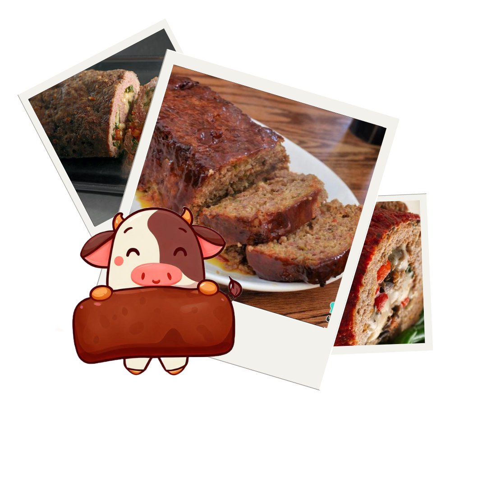

indisponivel para sua resolução
Bolo de Carne

Ingredientes
8 porções
- 1/2 kg de carne moída
- 1 pacote de sopa de cebola
- presunto fatiado
- queijo fatiado
- tempero verde
- sal a gosto
Modo de Preparo
Tempo de preparo : 15min
- Tempere a carne moída com a sopa de cebola, o tempero verde e o sal.
- Coloque a carne temperada sobre uma folha de papel laminado ou papel manteiga e abra a massa com um rolo, na espessura de 1 cm, mais ou menos.
- Forre a carne com o presunto e o queijo, pode-se colocar também milho verde, ervilha e requeijão.
- Enrole a carne, com ajuda da folha de papel laminado ou manteiga, em forma de rocambole.
- Leve ao forno, em temperatura alta, por mais ou menos 30 minutos, ou no microondas por 15 minutos.
- Bom apetite!